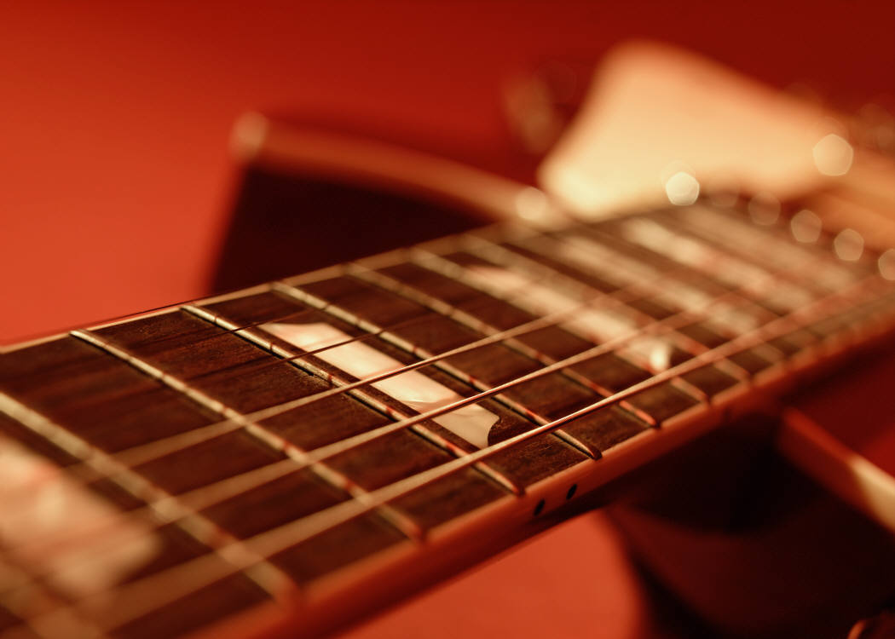

The Kenny Rogers Effect
Good Music and Stroke Therapy
Kat Aleksandrova
Spring 2011

Some people believe that someday cars will fly, that people will travel
through time, or that the simple act of listening to music will cure
the ill. While time travel and flying cars have yet to be invented, the
healing powers of music have been discovered. Studies have found that
music is able to return the ability to see or speak to stroke, lesion,
or other brain-damaged patients. This phenomenon is often referred to
as “The Kenny Rogers Effect.”
The ability to select and perceive
information, as well as be aware of what is going on in the world
depends on mood. Melodic Intonation Therapy, a kind of therapy that
teaches one to sing until he or she can talk, takes advantage of the
fact that language functions are located in the left brain and music on
the right brain. So, when a stroke victim is robbed of their ability to
speak, it is possible to train their brain to move linguistic functions
to the other side by associating music with language.
David Soto, an Imperial College London
neuroscientist, is a co-author of a study focusing on the apparent
therapeutic crossover effect of music. “There seems to be a strong
coupling in the brain between emotional and attentional areas,” says
Soto. “When emotional areas light up and are activated, the attentional
system seems to be more effective as well.” The study, published in the
Proceedings of the National Academy of Sciences, resonates with earlier
research on the general benefits of music for cognitive deterioration
and its specific benefits for stroke victims.
In a prominent paper published last year
in Brain, Finnish researchers measured the cognitive recoveries of 60
stroke victims who listened to music, audio books or nothing at all
while undergoing standard therapy. Patients in the music group
performed better, but mechanisms underlying the improvements remained
uncertain. It seemed possible that the music, which was chosen without
regard for patients’ musical preferences, produced a beneficial state
of heightened mental arousal. The patients’ ears, and thus their
brains, perked up. But it was also possible, as suggested by Soto’s
findings, that patients happened to like the music, and that benefits
were connected to pleasure derived from favorite songs.
Participants in Soto’s study had suffered
lesions to their brains’ parietal cortex, a region central to visual
and spatial processing. This left them with a condition called visual
neglect, in which people lose half their spatial awareness. Victims
will sometimes eat food from only one side of their plate, shave one
side of their faces, or, as tested in the study, fail to perceive
visual prompts on one side of a computer screen. When the patients
listened to music they did not like, their brains were highly aroused,
but they performed poorly on tests of their weakened perceptual side.
When listening to their favorite songs, they performed far better, even
though their mental arousal was relatively low. Among the artists
favored by the patients were the Flying Burrito Brothers Band, Frank
Sinatra, and Kenny Rogers. Songs from the latter artist provided the
greatest benefits, inspiring the name “The Kenny Rogers Effect.” The
results suggested that something other than sheer activation produced
the therapeutic effects. A brain scan of one patient found increased
activity in the brain’s pleasure centers, which happened to be located
beside his damaged parietal cortex. The increased releases of dopamine,
which is an emotion-regulating neurotransmitter, may be responsible.
This could lead to an increase of neural resources in these critical
damaged brain regions.
The dopamine-boosting drug Levodopa has
been used experimentally to treat strokes, but results have been mixed
and its many side effects include seizures, uneven heart rate, and
worsening of tremors. Music is ostensibly a less-toxic source.
University of Helsinki cognitive scientist Teppo Sarkamo, a co-author
of the Brain study, lauded Soto’s methodology. However, he noted that
the small number of patients involved means that “no firm conclusions
can yet be drawn about the robustness of the music effect.” Since
patients were tested while listening to the music rather than
afterwards, Sarkamo said, “There is no evidence about the possible
long-term effects of music-induced positive emotions” on recovery.
Hopefully future studies will be able to relate the effects of music on
more patients and other stroke-related problems.